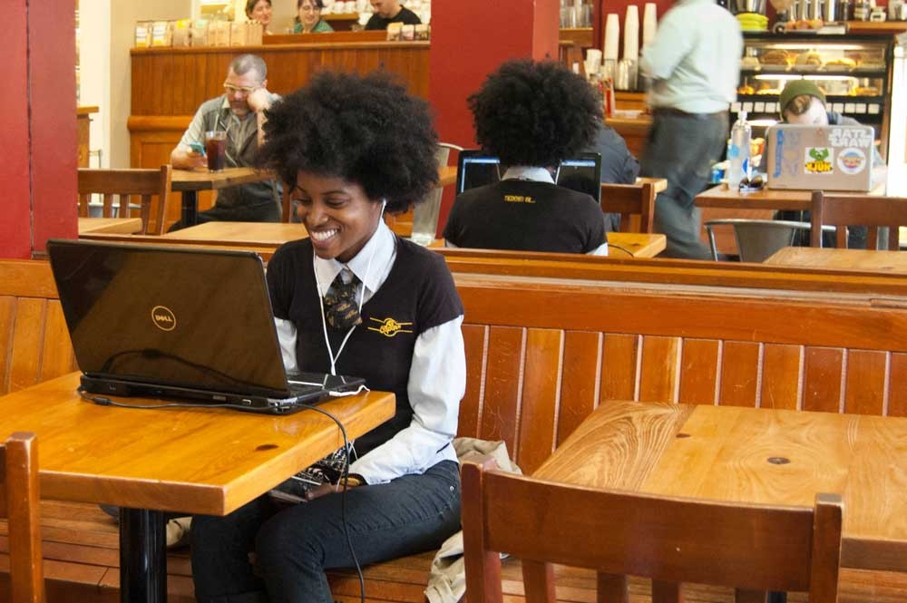

Cafe Star Avenue
Cafe Star Avenue is a neighborhood cafe and coffee shop on st. charles avenue serving locally-roasted coffees along with sandwiches, salads, fresh-squeezed juices, smoothies, sweet & savory pastries. if you've got time to sit for a spell, the convenient lower garden district space has coffee shop standards like free wifi and local art, but a few unexpected gems set it apart—beer, wine, irish coffee, mimosas, magazines/books.
Indoor or outdoor seating are available.
Pickup or delivery thru doordash or uber eats.
Local providers: orleans coffee, mojo coffee roasters, hey! coffee
maple street patisserie, gracious bakery
